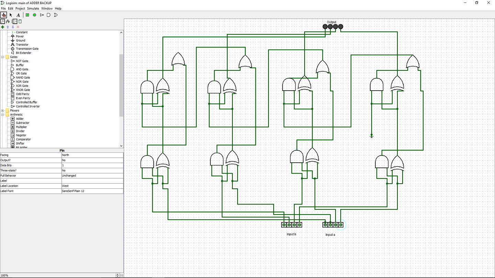
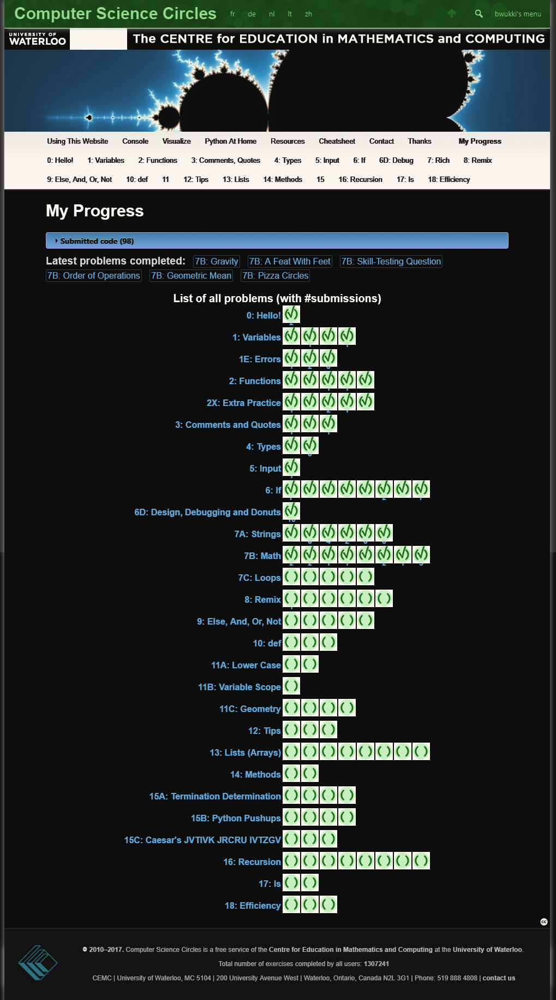

While reading chapter 1 of elements I wanted to look up a bit more detail on logic gates. In doing so I found this video which I think is very helpful.
First adding circuit complete! Next up is adding subtraction functionality
Current progress:
